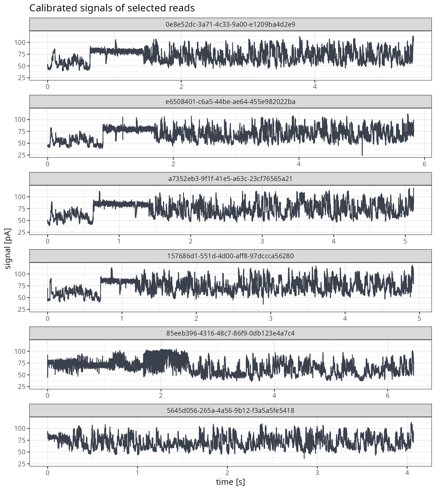
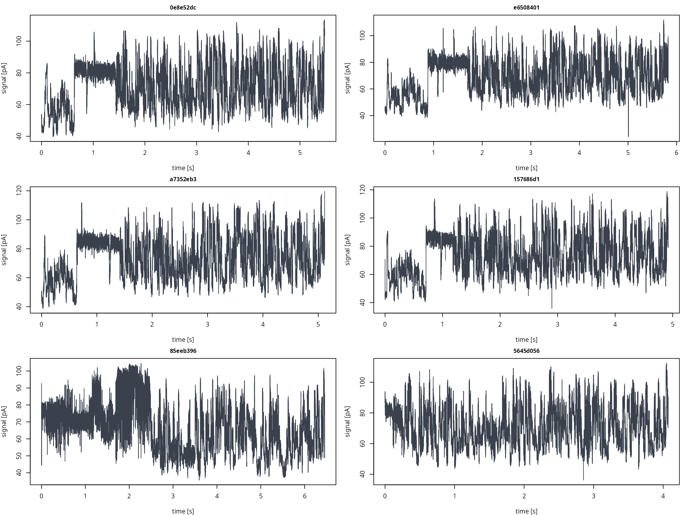

This vignette shows how to plot the signals of many reads at once.
Two approaches are given: several reads drawn in a single figure, and
one image file per read written while the POD5 file is processed in
groups. Extraction of single signal is described in
vignette("signal_extraction").
First approach keeps all selected signals in memory, so it is
suitable for a few to a few dozen reads. Second, based on
process_pod5(), holds only one group of reads in memory at
a time. This is recommended for whole files.
Example data
All examples below use a small direct RNA sequencing (DRS) file provided with the package.
pod5_file <- system.file("extdata", "drs-filtered.pod5",
package = "pod5R", mustWork = TRUE)
reader <- pod5R::open_pod5(pod5_file)
reads <- pod5R::read_pod5(reader)
nrow(reads)
#> [1] 42Several reads at one figure
Selecting and extracting reads
Reads are selected from the metadata and extracted with a single
read_pod5() call. Metadata and signal vectors are returned
in the requested order, so the sample rate of each of the reads remain
available for the time axis.
# first six reads in file order
selected_ids <- reads$read_id[1:6]
out <- pod5R::read_pod5(reader,
read_ids = selected_ids,
signal = TRUE,
calibrated = TRUE)
pod5R::close_pod5(reader)
lengths(out[['signal']])
#> 0e8e52dc-3a71-4c33-9a00-e1209ba4d2e9 e6508401-c6a5-44be-ae64-455e982022ba
#> 21908 23300
#> a7352eb3-9f1f-41e5-a63c-23cf76565a21 157686d1-551d-4d00-aff8-97dccca56280
#> 20462 19685
#> 85eeb396-4316-48c7-86f9-0db123e4a7c4 5645d056-265a-4a56-9b12-f3a5a5fe5418
#> 25824 16285Combining signals into single data frame
ggplot2 expects a single long data frame with one row per sample, so
the signals are combined first. The read_id column
identifies the read each sample comes from. Keep in mind that long reads
produce large data frames (here, about 127,464 rows). For longer reads,
or for many reads, plotting only an interval with
start_sample and end_sample should be
considered.
signal_df <- do.call(rbind, lapply(seq_along(selected_ids), function(i) {
read_signal <- out[['signal']][[selected_ids[i]]]
data.frame(read_id = selected_ids[i],
# that is how time is rescaled to seconds
time = (seq_along(read_signal) - 1) / out[['reads']]$sample_rate[i],
pa = read_signal)
}))
# keep facets in the requested read order
signal_df$read_id <- factor(signal_df$read_id, levels = selected_ids)
head(signal_df, 3)
#> read_id time pa
#> 1 0e8e52dc-3a71-4c33-9a00-e1209ba4d2e9 0.00000 48.33975
#> 2 0e8e52dc-3a71-4c33-9a00-e1209ba4d2e9 0.00025 51.28519
#> 3 0e8e52dc-3a71-4c33-9a00-e1209ba4d2e9 0.00050 51.11193ggplot2
facet_wrap() draws one panel per read. With
scales = "free_x", each panel span the full read length,
while the current axis is shared, so signal levels can be compared
between the reads.
g.base <- ggplot2::ggplot(signal_df, ggplot2::aes(x = time, y = pa))
g.line <- ggplot2::geom_line(color = "#3a414d")
g.facet <- ggplot2::facet_wrap(~read_id, ncol = 1, scales = "free_x")
g.labs <- ggplot2::labs(title = "Calibrated signals of selected reads",
x = "time [s]",
y = "signal [pA]")
plot_reads <- g.base + g.line + g.facet + g.labs + ggplot2::theme_bw()
print(plot_reads)
Base R graphics
In base R, the panel grid is set with par(mfrow = ...).
The previous graphical parameters are restored after plotting.
old_par <- graphics::par(mfrow = c(3, 2), mar = c(4, 4, 2, 1))
for (i in seq_along(selected_ids)) {
read_signal <- out[['signal']][[selected_ids[i]]]
graphics::plot((seq_along(read_signal) - 1) / out[['reads']]$sample_rate[i],
read_signal,
type = "l",
col = "#3a414d",
xlab = "time [s]",
ylab = "signal [pA]",
main = substr(selected_ids[i], 1, 8),
cex.main = .9)} # for i
graphics::par(old_par)Panel titles show only the first eight characters of each UUID, to keep them short.
One file per read
Processing reads in groups
process_pod5() reads consecutive groups of
part_size reads and passes each group to a user-supplied
function. With signal = TRUE, the function receives a named
list with reads (metadata) and signal (vectors
named by UUID). Everything the function returns is discarded, so plots
have to be written to files in it. Only one group is held in memory at a
time.
In this vignette, plots are written to a temporary directory. For
real data,save_dir should point to permanent location.
save_dir <- file.path(tempdir(), "signal_plots")
if (!dir.exists(save_dir)) {
dir.create(save_dir, recursive = TRUE)
}Note:
process_pod5()always reads whole signals. For very long reads, a function callingextract_pod5_signal()withstart_sampleandend_sampleon selected reads may be a better choice.
Base R graphics
The function below writes one PNG file per read, named after its UUID:
# writes one base R signal plot (png) per read in the group
save_signal_plots_base <- function(batch, save_dir) {
for (i in seq_len(nrow(batch[['reads']]))) {
# signal vectors are named by UUID, so look them up by read_id
read_id <- batch[['reads']]$read_id[i]
read_signal <- batch[['signal']][[read_id]]
# open a png device; file named by read UUID with a _base suffix
grDevices::png(file.path(save_dir, paste0(read_id, "_base.png")),
width = 1600, height = 600, res = 150)
# convert sample index to seconds
graphics::plot((seq_along(read_signal) - 1) / batch[['reads']]$sample_rate[i],
read_signal,
type = "l",
col = "#3a414d",
xlab = "time [s]",
ylab = "signal [pA]",
main = read_id)
grDevices::dev.off()
} # for i
return(invisible(NULL))
}
pod5R::process_pod5(pod5_file,
FUN = save_signal_plots_base,
part_size = 10,
signal = TRUE,
calibrated = TRUE,
save_dir = save_dir)
#> [2026-11-10 23:25:24.373543] Processing POD5 reads...
#> [2026-11-10 23:25:30.285009] Done!
length(list.files(save_dir, pattern = "_base\\.png$"))
#> [1] 42Any additional arguments given to process_pod5() (such
as save_dir above) are passed to the function.
ggplot2
The same approach applies with ggplot2, with each plot saved by
ggsave():
# write one ggplot2 signal plot (png) per read in the group
# FUN for process_pod5(), called once per group of reads
save_signal_plots_ggplot <- function(batch, save_dir) {
# seq_len() skips the loop when a group has no reads
for (i in seq_len(nrow(batch[['reads']]))) {
# signal vectors are named by UUID, so look them up by read_id
read_id <- batch[['reads']]$read_id[i]
read_signal <- batch[['signal']][[read_id]]
# ggplot2 needs a data frame: one row per sample, time in seconds
read_df <- data.frame(time = (seq_along(read_signal) - 1) / batch[['reads']]$sample_rate[i],
pa = read_signal)
# layered plot
g.base <- ggplot2::ggplot(read_df, ggplot2::aes(x = time, y = pa))
g.line <- ggplot2::geom_line(color = "#3a414d")
g.labs <- ggplot2::labs(title = read_id,
x = "time [s]",
y = "signal [pA]")
plot_signal <- g.base + g.line + g.labs + ggplot2::theme_bw()
ggplot2::ggsave(file.path(save_dir, paste0(read_id, "_ggplot.png")),
plot = plot_signal,
width = 10, height = 4, dpi = 150)
} # for i
return(invisible(NULL))
}
pod5R::process_pod5(pod5_file,
FUN = save_signal_plots_ggplot,
part_size = 10,
signal = TRUE,
calibrated = TRUE,
save_dir = save_dir)
#> [2026-11-10 23:25:30.343513] Processing POD5 reads...
#> [2026-11-10 23:25:39.5971] Done!
length(list.files(save_dir, pattern = "_ggplot\\.png$"))
#> [1] 42Selected reads only
To write plots only for a subset of reads, the selection is applied within the function. In the example below, only reads exceeding 20,000 samples are plotted:
# writes base R signal plots only for reads longer than min_samples.
# intended as FUN for process_pod5(), called once per group of reads
save_long_reads <- function(batch, save_dir, min_samples) {
# flag reads in the current group exceeding defined sample threshold
keep <- batch[['reads']]$num_samples > min_samples
if (!any(keep)) {
return(invisible(NULL)) # no long reads there
}
# subset metadata only. Signal list is left as is, as vectors are looked up by read_id
batch[['reads']] <- batch[['reads']][keep, , drop = FALSE]
save_signal_plots_base(batch, save_dir)
return(invisible(NULL))
}
long_dir <- file.path(tempdir(), "long_reads")
if (!dir.exists(long_dir)) {
dir.create(long_dir, recursive = TRUE)
}
pod5R::process_pod5(pod5_file,
FUN = save_long_reads,
part_size = 10,
signal = TRUE,
calibrated = TRUE,
verbose = FALSE,
save_dir = long_dir,
min_samples = 20000)
length(list.files(long_dir))
#> [1] 11When only a few reads are required from the large file, it is more
efficient to select their UUIDs from the read_pod5()
metadata and extract them directly with
extract_pod5_signal(). By this, the signals of all the
other reads are not decompressed.
Summary of functions used
| Function | Description |
|---|---|
read_pod5() |
Read metadata; signal with signal = TRUE
|
process_pod5() |
Processing of reads in groups with a user-supplied function |
extract_pod5_signal() |
Raw or calibrated signal vectors, optionally an interval |
open_pod5() / close_pod5()
|
Open and close a reusable reader |